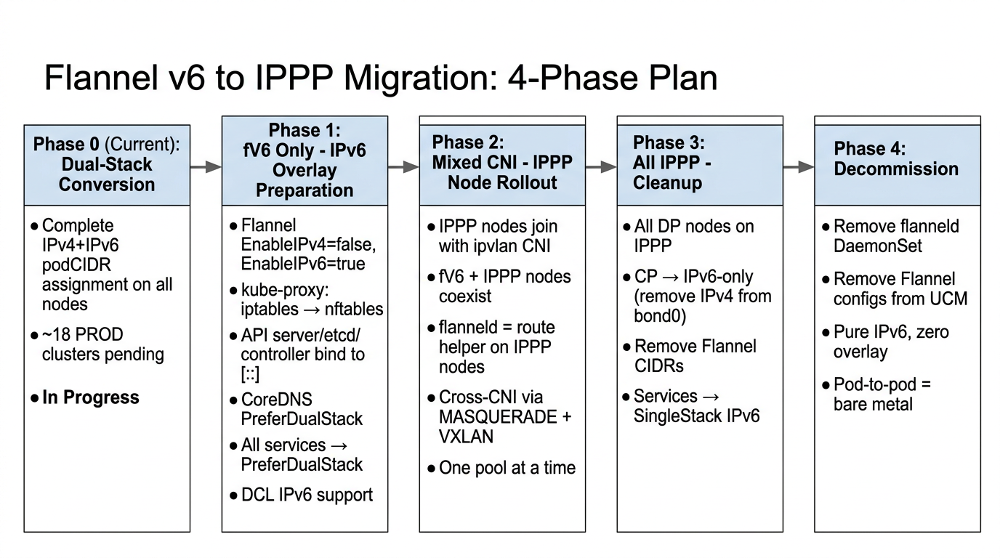
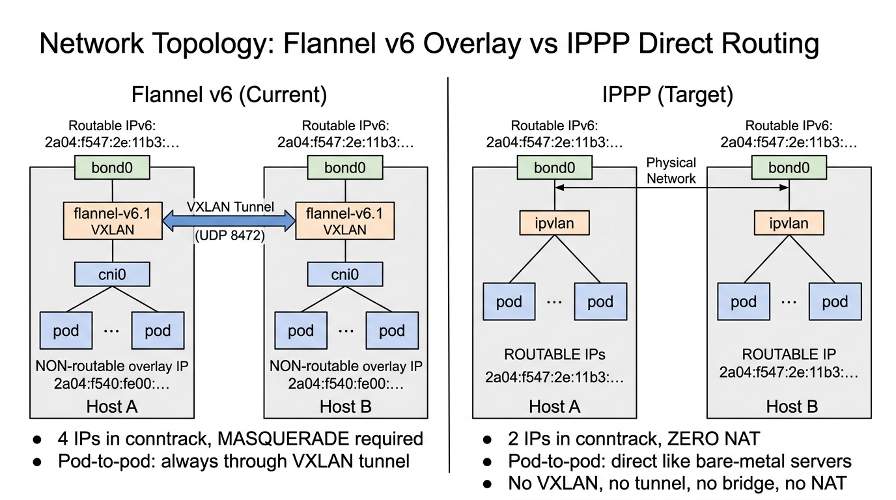
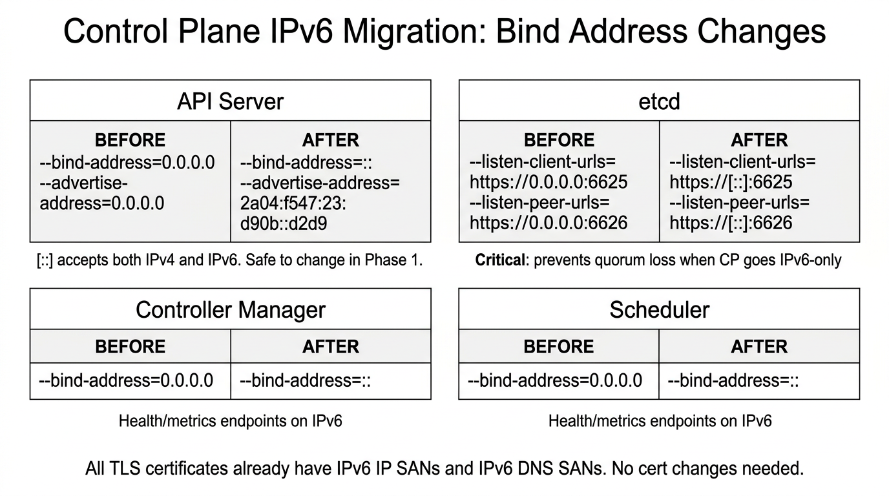
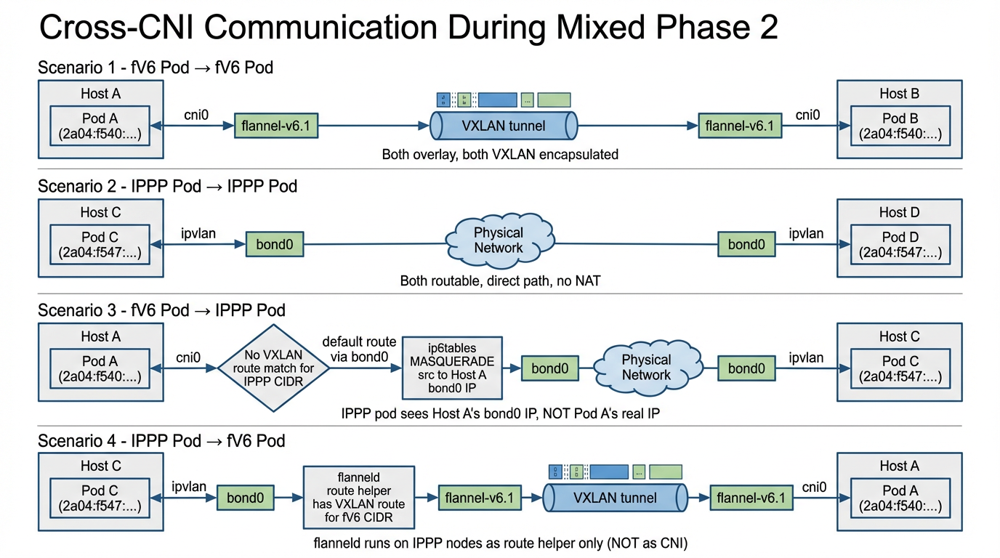

Complete Migration Path from IPv6 Overlay to IP-Per-Pod with Routable Addresses at LinkedIn
This document describes the complete migration path from Flannel IPv6 overlay networking to IP-Per-Pod (IPPP) with routable IPv6 addresses for Kubernetes clusters at LinkedIn. The migration is divided into four phases, each building on the previous one.
Every data plane worker node uses ipvlan CNI with routable IPv6 addresses (2a04:f547:...). No Flannel overlay, no VXLAN tunnels, no cni0 bridge.
All CP nodes bind on [::] and advertise IPv6. IPv4 removed from CP bond0. etcd peer/client over IPv6.
Every ClusterIP service — CoreDNS, kyverno, infra-webhooks, metrics-server, the kubernetes service itself — runs ipFamilyPolicy: SingleStack with ipFamilies: [IPv6].
All nodes use kube-proxy in nftables mode with O(1) verdict map lookups. No iptables KUBE-SERVICES chains, no IPVS kube-ipvs0 dummy device.
Pod-to-pod communication is equivalent to bare-metal server communication. Zero overlay, zero NAT, fully routable IPv6 addresses. Conntrack entries drop from 4 IPs (Flannel) to just 2 (source + destination).
| Item | Reason |
|---|---|
| KSAP/NSS from hostNetwork to IPPP | Separate project; depends on stacking support, noisy-neighbor isolation on shared bond0, and application readiness |
| Hostname project (DNS discovery replacement) | Not part of this migration. Services continue using ClusterIP-based discovery via kube-proxy nftables |
| Stateful workloads (Kafka, Espresso, Venice) | Use host IPs directly, unaffected by CNI changes |
| kube-proxy removal | Remains in nftables mode; removal requires hostname/disco project completion |
| CoreDNS removal | Continues as in-cluster DNS provider; DCL-only DNS is a separate project |
| Cross-cluster IPPP communication | Single cluster scope only |
| Reviewer | Status |
|---|---|
| Steven Ihde | Not Started |
| Ronak Nathani | Not Started |
| Lavanya Rangaswamy | Not Started |

2a04:f540:fe00::/41 — non-routable overlayflannel-v6.1cni0 (Linux bridge per node)flannel-v6.1, cni0, vethXXXX2a04:f547:... — routable from host subnetbond0 (L3 mode)ipvl_bond0_X (one per pod)
| Aspect | Flannel v6 | IPPP |
|---|---|---|
| CNI Plugin | 10-flannel.conflist | ipvlan_nw.conf |
| IP Type | Non-routable overlay (2a04:f540:fe00::/41) | Routable host-subnet (2a04:f547:...) |
| Routing | VXLAN encap/decap through flannel-v6.1 | Direct kernel routing via bond0 |
| NAT | ip6tables MASQUERADE for cross-subnet | None |
| Conntrack Entries | 4 IPs per connection | 2 IPs per connection |
| Network Devices | flannel-v6.1, cni0, vethXXXX | ipvl_bond0_X |
| Performance | Overlay overhead (encap/decap + bridge) | Bare-metal equivalent |
| Troubleshooting | Complex (overlay IPs, NAT, tunnels) | Simple (routable IPs, tcpdump bond0) |
Before any IPv6-only or IPPP migration can begin, all nodes must have both IPv4 and IPv6 podCIDRs assigned. This is the dual-stack conversion phase — currently in progress across all environments.
| Action | Owner | Status | Deadline | Notes |
|---|---|---|---|---|
| Complete dual-stack conversion in all Prod clusters | K8s SRE | In Progress | May 15 | Started Jan '26, ~18 clusters pending |
| GPU node dual-stack conversion | GPU SRE | Not Started | Mar 15 | MLI workloads may slip timeline |
| EI k8s-0 dual-stack completion | K8s SRE | In Progress | Apr 30 | EI environments on accelerated path |
| Corp cluster dual-stack rollout | K8s SRE | In Progress | Apr 30 | Lower risk — fewer workloads |
| Phase | State | What Changes |
|---|---|---|
| 1 — fV6 Only | EnableIPv4=false, EnableIPv6=true |
IPv6-only overlay. All services dual-stack. kube-proxy nftables. CP binds [::]. DCL IPv6. |
| 2 — Mixed CNI | fV6 Flannel + IPPP coexist | Roll IPPP to DP node pools. flanneld stays as route helper on IPPP nodes. |
| 3 — All IPPP | All DP on IPPP, CP converting | Audit IPv4 deps. Remove IPv4 from CP. Clean up Flannel CIDRs. |
| 4 — Decommission | Pure IPPP, pure IPv6 | Remove flanneld, Flannel configs, UCM cleanup. Replace CP nodes. |
Phase 1 prepares the entire cluster for IPv6. No IPPP nodes are introduced yet. The goal: every component must be ready for IPv6 communication so that IPPP nodes can join seamlessly in Phase 2.
Existing IPPP test clusters use IPVS mode, but upstream Kubernetes has signaled IPVS is "doomed in the long run." nftables provides the same O(1) lookup via verdict maps without IPVS's downsides: no kube-ipvs0 dummy device, no ip_vs kernel modules, no IPVS scheduler limitations. nftables is beta in K8s 1.31 (feature gate on by default) and GA in 1.33.
# BEFORE (templates/configmap.yaml):
bindAddress: 0.0.0.0
healthzBindAddress: 0.0.0.0:{{ .Values.kubeProxyHealthzPort }}
metricsBindAddress: 0.0.0.0:13276
# AFTER:
bindAddress: '::'
healthzBindAddress: '[::]:{{ .Values.kubeProxyHealthzPort }}'
metricsBindAddress: '[::]:13276'# BEFORE -- values/prod-ltx1/k8s-33/values.yaml:
clusterCidr: "100.96.0.0/12,2a04:f540:fe00::/41"
# AFTER:
kubeProxyMode: nftables
clusterCidr: "100.96.0.0/12,2a04:f540:fe00::/41,2a04:f547:93:411:461::/80"
# ^^^^^^^^^^^^^^^^^^^^^^^^
# IPPP pod CIDR added now127.0.0.1. Verify health checks and monitoring before rollout.

# BEFORE:
--bind-address=0.0.0.0 # IPv4 only
--advertise-address=0.0.0.0 # auto-detects to IPv4
# AFTER:
--bind-address=:: # binds both IPv4 and IPv6 (:: is dual-stack)
--advertise-address=2a04:f547:23:d90b::d2d9 # explicit IPv6 node address# BEFORE:
--listen-client-urls=https://0.0.0.0:6625,http://127.0.0.1:3171
--listen-peer-urls=https://0.0.0.0:6626
# AFTER:
--listen-client-urls=https://[::]:6625,http://[::1]:3171
--listen-peer-urls=https://[::]:6626
# advertise URLs use hostnames (DNS resolves to both v4/v6) — no changeWhen CP nodes go IPv6-only (Phase 3), API server resolves etcd DNS and gets only AAAA. If etcd only listens on 0.0.0.0 (IPv4), IPv6 connections fail → API server loses etcd → cluster down. Changing now is safe — [::] accepts both.
# BEFORE:
--bind-address=0.0.0.0 # health/metrics endpoint IPv4 only
# AFTER:
--bind-address=:: # health/metrics endpoint on both v4 and v6CoreDNS service must be converted to PreferDualStack so it gets both IPv4 and IPv6 ClusterIPs. This allows fV6 pods to reach CoreDNS via IPv6 while IPv4 pods still work during transition.
[fd7a:7be2:2965:0:127::1]:53 — ULA for IPPP pods to reach DCL2a04:f540:fe80::c744)Every ClusterIP service must be converted to PreferDualStack so IPv6-only pods can reach them. Currently 39 of 39 non-headless services are SingleStack IPv4 — this is the single biggest blocker.
Kubelet's clusterDNS setting changes from [10.244.0.10] (IPv4 CoreDNS) to the IPv6 DCL ULA [fd7a:7be2:2965:0:127::1]. Rolled out colo-by-colo.
With Phase 1 complete, the cluster is ready for IPPP nodes. Phase 2 converts data plane node pools from fV6 Flannel to IPPP, one pool at a time.

flanneld runs on IPPP nodes as a DaemonSet but is NOT the CNI plugin. The active CNI is ipvlan_nw.conf. flanneld programs VXLAN FDB entries and routes, enabling the IPPP node to reach fV6 overlay pods through flannel-v6.1.
Both pods on overlay. VXLAN encap through flannel-v6.1. Standard Flannel path. No change from today.
Both pods routable. Direct over physical network. No overlay, no NAT. Bare-metal equivalent. Only 2 IPs.
Flannel kernel routing doesn't match IPPP CIDR → default route via bond0. ip6tables MASQUERADE rewrites source to host's bond0 IP. IPPP pod sees Flannel host's node IP.
IPPP node's flanneld (route helper) has VXLAN route for Flannel CIDR. Packet is VXLAN-encapsulated to the Flannel node's VTEP, decapsulated, delivered via cni0.
# BEFORE (profile/nimbus-ippp/coresysctl.yaml):
coresysctl::sysctl_d:
- name: 'nimbus-ippp'
sysctls:
net.ipv6.conf.all.forwarding: 1
net.ipv4.vs.conntrack: 1 # IPVS — REMOVE
net.ipv4.vs.expire_nodest_conn: 1 # IPVS — REMOVE
net.ipv4.vs.expire_quiescent_template: 1 # IPVS — REMOVE
# AFTER:
coresysctl::sysctl_d:
- name: 'nimbus-ippp'
sysctls:
net.ipv6.conf.all.forwarding: 1# BEFORE (profile/nimbus-ippp/coremodprobe.yaml):
coremodprobe::load:
ip_vs: # IPVS — REMOVE
ip_vs_rr: # IPVS — REMOVE
ip_vs_wrr: # IPVS — REMOVE
ip_vs_sh: # IPVS — REMOVE
# AFTER:
coremodprobe::load: {}
# nf_tables auto-loads when kube-proxy uses nft commandscoredcl::k8s_endpoints:
- '2a04:f540:fe80::c744' # IPv6-only CoreDNS# KubernetesNodeConfigurationRevision:
spec:
cniType: IPvlan
kubeletConfig:
kubelet_config_file_contents: |
address: '::'
clusterDNS:
- fd7a:7be2:2965:0:127::1 # DCL ULA only
healthzBindAddress: '::'# K8s Release Channel:
K8SReleaseChannel: WORKER_NODE_IP_PER_POD
# Compute Broker Pool:
cniType: IPvlannft list ruleset shows kube-proxy tables on existing nodeskubectl get svc -A shows IPv6 ClusterIPsdig @fd7a:7be2:2965:0:127::1 kubernetes.default.svc.cluster.local AAAAkubectl exec works on IPPP pods--ipv6-per-pod-enabled=trueOnce all DP nodes are IPPP and IPv4 dependencies are resolved, remove IPv4 from CP node bond0 interfaces. All CP components already listen on [::] from Phase 1.
| Component | Current IPv4 Usage | Action |
|---|---|---|
| Skyfall | Kafka brokers via atd.prod (IPv4-preferred DNS) | Switch to atd-ipv6 disco endpoints |
| DFW rules | ACLDB may not include IPPP CIDRs | Verify IPPP CIDRs in DFW-DB allow rules |
| LNKD-otelcontribcol | DP-only agent, untested on IPv6 | Verify with owning team |
| fd-sb-client-agent | DP-only network monitoring agent | Verify with owning team |
| droplet | DP-only Nimbus agent | Verify with owning team |
With all nodes on IPPP, remove all Flannel-related configuration.
| Item | Location | How |
|---|---|---|
| flanneld DaemonSet | k8s-flanneld Helm chart | Remove ArgoCD application |
kube-flannel-cfg ConfigMap | kube-system namespace | Removed with chart |
10-flannel.conflist | ucm-k8s-kubernetes-node/files/ | Delete file from module |
k8s_dcl_iptable_rules.sh | ucm-k8s-kubernetes-node/files/ | Delete file from module |
dcl_iptables.pp | ucm-k8s-kubernetes-node/manifests/services/ | Delete class |
Flannel conditional in init.pp | ucm-k8s-kubernetes-node/manifests/ | Remove if cni_type=='Flannel' block |
Flannel CIDRs in --cluster-cidr | UCM CP config | Update controller-manager flags |
| IPv4 CIDRs in kube-proxy | kube-proxy Helm values | clusterCidr: IPPP CIDR only |
IPv4 CIDRs in ArgoCD NO_PROXY | k8s-argocd Helm values | Remove 10.0.0.0/8, 100.96.0.0/12 |
# All services → SingleStack IPv6:
ipFamilyPolicy: SingleStack
ipFamilies: [IPv6]
# kube-proxy — IPPP CIDR only:
clusterCidr: "2a04:f547:93:411:461::/80"
# Controller manager — remove Flannel CIDRs:
--cluster-cidr: 2a04:f547:93:411:461::/80# Per-node verification:
nft list ruleset | grep kube-proxy # shows kube-proxy nftables
iptables -t nat -L KUBE-SERVICES # empty or "No chain"
iptables -t nat -L | grep FLANNEL # no matches
ip link show flannel.1 2>&1 # "does not exist"
ip link show flannel-v6.1 2>&1 # "does not exist"
ip link show cni0 2>&1 # "does not exist"
# Cluster-wide:
kubectl get pods -A -o wide # all IPs are 2a04:f547:...
kubectl get svc -A # all ClusterIPs are IPv6
kubectl exec test -- nslookup kubernetes.default # resolves IPv6
conntrack -L -d <api-ipv6> # direct connections, no MASQ| Flag | Value | Migration Impact |
|---|---|---|
--service-cluster-ip-range |
10.244.0.0/16, 2a04:f540:fe80::/108 |
Safe. Already dual-stack. IPPP uses same service CIDR. No change needed. |
--enable-aggregator-routing |
true |
Risk. On K8s 1.31, Endpoints for IPv4-only services won't contain IPv6 pod IPs → kubectl top and HPA break. Requires K8s 1.34. |
--enable-admission-plugins |
MutatingAdmissionWebhook, ValidatingAdmissionWebhook |
Risk. API server connects directly to webhook pod IPs. On K8s 1.31, IPv4-only webhook services won't list IPv6 IPPP IPs → webhooks unreachable. |
--advertise-address |
0.0.0.0 |
Safe. Listens on all interfaces including bond0 IPv6. |
--egress-selector-config-file |
NOT SET | Beneficial. No Konnectivity tunnel — API server connects directly to pod IPs. Natural split path during mixed state. |
# Before IPPP:
Endpoints("k8s-kyverno-svc") = [100.96.2.5, 100.96.1.5, 100.96.2.133]
# After 1 pod moves to IPPP:
Endpoints = [100.96.2.5, 100.96.1.5] ← third pod GONE
(IPv6 IP 2a04:f547:... not listed in IPv4-only Endpoints)| Scenario | Path | NAT Ops | Conntrack IPs |
|---|---|---|---|
| Current (IPv4 DS) | Pod 100.96.x → ClusterIP 10.244.0.1 → DNAT → MASQUERADE → API server |
2 | 4 |
| Future fV6 | Pod 2a04:f540:... → IPv6 ClusterIP → DNAT → MASQUERADE → API server |
2 | 4 |
| Future IPPP | Pod 2a04:f547:... → IPv6 ClusterIP → DNAT → direct, NO MASQUERADE → API server sees pod's real IP |
1 | 3 |
| Scenario | Path | Overlay? |
|---|---|---|
| Current (IPv4 DS) | API server → Endpoints → 100.96.x:port → MASQUERADE → VXLAN → cni0/veth → pod |
Yes (VXLAN) |
| Future fV6 | Same pattern, all IPv6. VXLAN over IPv6. | Yes (VXLAN) |
| Future IPPP | API server → EndpointSlices → 2a04:f547:...:port → route via bond0 → direct, no overlay, no NAT |
No |
| Certificate | Has IPv6 IP SAN | Has IPv6 DNS SANs | Change Needed |
|---|---|---|---|
API Server (apiserver.cert) |
✓ 2A04:F547:23:D90B::D2D9 |
✓ atd-ipv6, atd-udp-ipv6 |
None |
etcd Client (identity.cert) |
✓ 2A04:F547:23:D90B::D2D9 |
✓ | None |
etcd Peer (etcd.cert) |
✓ 2A04:F547:23:D90B::D2D9 |
✓ | None |
Controller (controller.cert) |
✓ 2A04:F547:23:D90B::D2D9 |
✓ | None |
Scheduler (scheduler.cert) |
✓ 2A04:F547:23:D90B::D2D9 |
✓ | None |
Service Account (service_account.cert) |
N/A (signing cert) | ✓ | None |
P3 note: API server cert has IP:10.244.0.1 (IPv4 ClusterIP) but not the IPv6 ClusterIP. Add 2a04:f540:fe80::1 to SAN for KUBERNETES_SERVICE_HOST direct-IP connections.
| Agent | Type | Migration Impact |
|---|---|---|
obhc-agent | systemd, 30+ sub-checks | [kubernetes] checker may probe pod IPs. Needs review for CIDR assumptions. |
dfwd.service | DFW host agent | Must allow IPPP pod CIDR traffic in rules. |
skyfall.service | Monitoring agent | Check pod CIDR metric filters. Switch to atd-ipv6 disco endpoints. |
argos-agent | NetEng fault detection | Check for flannel.1 interface assumptions. |
rain_agent | Metrics collection | Check for pod CIDR metric paths. |
inquery-agent | Fact collection | Check network interface enumeration. |
droplet.service | Nimbus agent (DP-only) | Check for pod CIDR assumptions. |
fd-sb-client-agent | Fault detection sideband | Network monitoring — check flannel interface assumptions. |
k8s-metrics-agent | Pod metrics (hostNetwork) | BLOCKER: --ipv6-per-pod-enabled=false → must be true |
| DaemonSet Pod | hostNetwork | Impact |
|---|---|---|
kube-flannel-ds-amd64 | true | Removed on IPPP nodes (CNI switches to ipvlan) |
kube-proxy | true | Must switch to nftables mode for IPPP |
k8s-metrics-agent | true | Blocker — --ipv6-per-pod-enabled=false |
konnectivity-agent | false (podNetwork) | Must work on IPPP podNetwork |
k8s-datapack-agent | false (podNetwork) | Must work on IPPP podNetwork |
li-cert-manager-csi-driver | false (podNetwork) | CSI driver — must work on IPPP |
k8s-webhook-probe | false (podNetwork) | Must work on IPv6 pod IPs |
node-exporter | true | No pod network dependency |
fluent-bit | true | Collects logs — no CIDR dependency |
These services share ports and are co-located — they MUST stay on podNetwork (each gets a unique pod IP). This is not a problem for IPPP (ipvlan gives each pod a unique IP), only for a hypothetical hostNetwork approach.
| Node | Co-located Services |
|---|---|
ltx1-app152341 | kyverno-admission-controller + uqm-webhook |
ltx1-app156250 | kyverno-admission-controller + uqm-webhook |
ltx1-app156415 | k8s-sidecar-operator + maintenance-controller |
ltx1-app162785 | k8s-sidecar-operator + maintenance-controller |
li-cert-manager-approver-policy (2 replicas) and li-cert-manager-webhook (3 replicas) both bind 10250. These services MUST stay on podNetwork — impossible to run on hostNetwork without port remapping.
/k8s-metrics-agent --ipv6-per-pod-enabled=false --pod-discovery-mode=kubelettrue for IPPP pods. The metrics agent will not discover IPv6 pod metrics otherwise. Must be changed before any IPPP node rollout.
Complete tracking of all migration action items. Click on phase headers to expand/collapse.
| # | Action Item | Owner | Status | Deadline | Notes |
|---|---|---|---|---|---|
| 1 | Dual-Stack Migration — complete in all clusters (Prod, Corp, EI) | K8s SRE | In Progress | May 15 | Started Jan '26 |
| 2 | K8s 1.34 Upgrade — all clusters | Sameer / K8s SRE | In Progress | Apr 30 | EndpointSlice support — blocker |
| 3 | CoreDNS service → Dual-Stack (IPv4 + IPv6 ClusterIPs) | K8s SRE | In Progress | Feb 10 | PR #211 approved |
| 4 | DCL IPv6 support — bind [fd7a:...]:53, IPv6 CoreDNS upstream |
Steve Ihde / DCL | In Progress | Mar 30 | DCL 3.0.27+ |
| 5 | DCL IPv6 reverse PTR record support (PSSEINFRA-6774) | DCL Team | In Progress | Mar 30 | |
| 6 | DCL IPv6 k8s group support (PSSEINFRA-6773) | DCL Team | Ticket Created | Mar 30 | |
| 7 | KSAP+NSS Apps IPv6 Compatibility Audit | No owner | In Progress | Apr 15 | Started Jan '26 |
| 8 | KJP/MLI Pod Network Apps → PreferDualStack. Java: preferIPv6=true |
No owner | Not Started | May 15 | Coordinate w/ clients |
| 9 | K8s DaemonSets / Services → PreferDualStack for NSS/KSAP | K8s SRE | In Progress | Jun 15 | All clusters |
| 10 | ip6tables PREROUTING rules (cni0 → DCL IPv6) |
K8s SRE | Not Started | Mar 30 | May not be needed |
| 11 | ip6tables POSTROUTING / MASQUERADE rules | K8s SRE | Not Started | Mar 30 | May not be needed |
| 12 | Kubelet clusterDNS → IPv6 (fd7a:...::1, CoreDNS IPv6) |
K8s SRE | Not Started | Apr 30 | Colo-level rollout |
| 13 | Verify resolv.conf IP ordering (IPv6 first) |
K8s SRE | In Progress | Apr 30 | |
| 14 | Audit all services in dual-stack pod network — create tickets for IPv6 testing | No owner | Not Started | Apr 15 | |
| 15 | Test service delete/recreate downtime (measure v4→v6 gap) | K8s SRE | Not Started | Apr 15 | |
| 16 | Go/Python services: test v6-only mode [MLI/NKS apps] | No owner | Not Started | Jun 15 | |
| 17 | Verify GPU apps compatibility for IPv6 | GPU SRE | Not Started | Mar 15 | MLI may slip to Dec |
| 18 | Convert kubernetes service (default ns) → PreferDualStack |
K8s SRE | Not Started | Before IPPP | KUBERNETES_SERVICE_HOST |
| 19 | Verify Happy Eyeballs (RFC 6555) in k8s/Nimbus applications | App Teams | Not Started | Post-IPPP | Fallback behavior |
| 20 | k8s-metrics-agent: --ipv6-per-pod-enabled=true |
K8s SRE | Blocked | Before IPPP | Currently false — blocker |
| # | Action Item | Owner | Status | Deadline | Notes |
|---|---|---|---|---|---|
| 1 | API server --bind-address=0.0.0.0 → [::] |
K8s SRE | Not Started | Before IPPP | Accept IPv6 connections |
| 2 | API server --advertise-address → <node-ipv6> |
K8s SRE | Not Started | Before IPPP | IPv6 EndpointSlice backend |
| 3 | Regenerate API server TLS cert with IPv6 ClusterIP SAN | K8s SRE / LiPKI | Not Started | Before IPPP | P3 item per cert analysis |
| 4 | etcd --listen-client-urls → https://[::]:6625 |
K8s SRE | Not Started | Before IPPP | Required for CP IPv6-only |
| 5 | etcd --listen-peer-urls → https://[::]:6626 |
K8s SRE | Not Started | Before IPPP | Prevents quorum loss |
| 6 | Controller-manager + Scheduler --bind-address → [::] |
K8s SRE | Not Started | Before IPPP | Health/metrics on IPv6 |
| 7 | kube-proxy → nftables mode (cluster-wide) | Kiran | Not Started | Before IPPP | O(1) verdict maps |
| 8 | kube-proxy clusterCIDR: add IPPP CIDR (2a04:f547:...) |
Kiran | Not Started | Before IPPP | Prevent MASQUERADE |
| 9 | DCL: bind on ULA fd7a:7be2:2965:0:127::1 for IPPP pods |
DCL Team | Not Started | Before IPPP | IPPP bypasses cni0 DNAT |
| 10 | UCM nimbus-ippp profile (hieradata changes) |
Amit Joshi | Not Started | Before IPPP | coresysctl, coremodprobe |
| 11 | KCM IPvlan Node Configuration Revision | Amit Joshi | Not Started | Before IPPP | cniType=IPvlan |
| 12 | Compute Broker: create IPPP node pools | Vladimir Ishutinov | Not Started | Before IPPP | WORKER_NODE_IP_PER_POD |
| 13 | DFW rules: allow IPPP pod CIDR (2a04:f547:...) |
DFW Team | Not Started | Before IPPP | ACLDB / DFW-DB |
| 14 | Validate konnectivity-agent → server over IPv6 | K8s SRE | Not Started | Before IPPP | kubectl exec/logs depend on this |
| 15 | ArgoCD NO_PROXY: add IPPP CIDR |
K8s SRE | Not Started | Before IPPP | |
| 16 | k8s-metrics-agent: --ipv6-per-pod-enabled=true |
K8s SRE | Blocked | Before IPPP | Currently false — blocker |
| 17 | Rolling restart all pods (pick up new env vars) | K8s SRE | Not Started | Before IPPP | KUBERNETES_SERVICE_HOST |
| 18 | Verify KUBERNETES_SERVICE_HOST is IPv6 in new pods |
K8s SRE | Not Started | Before IPPP | Immutable after creation |
| 19 | Validate cross-CNI: IPPP pod ↔ fV6 pod | K8s SRE | Not Started | Before IPPP | Mixed CNI coexistence |
| 20 | Validate: API server → IPPP webhook pods | K8s SRE | Not Started | Before IPPP | |
| 21 | Host agents IPv6 audit (obhc, skyfall, dfwd, argos, rain) | K8s SRE | Not Started | Before IPPP | Verify no IPv4 assumptions |
| 22 | Skyfall Kafka → atd-ipv6 disco endpoints |
Skyfall Team | Not Started | Before IPPP | Currently IPv4-preferred |
| # | Action Item | Owner | Status | Deadline | Notes |
|---|---|---|---|---|---|
| 1 | Remove flanneld DaemonSet (ArgoCD app k8s-flanneld) |
K8s SRE | Not Started | Post-IPPP | After all DP nodes IPPP |
| 2 | Remove 10-flannel.conflist from UCM |
K8s SRE | Not Started | Post-IPPP | |
| 3 | Remove k8s_dcl_iptable_rules.sh from UCM |
K8s SRE | Not Started | Post-IPPP | |
| 4 | Remove dcl_iptables.pp from UCM manifests |
K8s SRE | Not Started | Post-IPPP | |
| 5 | Remove Flannel conditional block in init.pp |
K8s SRE | Not Started | Post-IPPP | |
| 6 | Controller-manager --cluster-cidr: remove Flannel CIDRs |
K8s SRE | Not Started | Post-IPPP | |
| 7 | kube-proxy clusterCIDR: IPPP CIDR only |
K8s SRE | Not Started | Post-IPPP | Remove 100.96.0.0/12, fV6 CIDR |
| 8 | ArgoCD NO_PROXY: remove 10.0.0.0/8, 100.96.0.0/12 |
K8s SRE | Not Started | Post-IPPP | |
| 9 | Convert all services → SingleStack IPv6 | K8s SRE | Not Started | Post-IPPP | Drop IPv4 ClusterIPs |
| 10 | CoreDNS service → SingleStack IPv6 | K8s SRE | Not Started | Post-IPPP | Optional — can stay dual |
| 11 | kubernetes (default ns) service → SingleStack IPv6 |
K8s SRE | Not Started | Post-IPPP | |
| 12 | Control Plane nodes → IPv6-only (remove IPv4 from bond0) |
K8s SRE | Not Started | Post-IPPP | After all DP on IPPP |
| 13 | IPv4 Dependency Audit (Skyfall, DFW, otelcontribcol, droplet) | K8s SRE | Not Started | Post-IPPP | Before CP IPv6-only |
| 14 | Infra Graph IPv6 audit script — verify all traffic IPv6 | Infra Graph | Not Started | Post-IPPP | |
| 15 | Final verification: nft list ruleset, no iptables, no flannel devices |
K8s SRE | Not Started | Post-IPPP | |
| 16 | Verify all pods have routable 2a04:f547:... addresses |
K8s SRE | Not Started | Post-IPPP | |
| 17 | Verify conntrack: direct pod-to-pod, zero MASQUERADE | K8s SRE | Not Started | Post-IPPP |